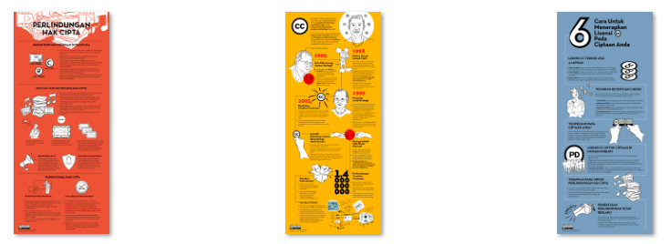

Tiga Infografis Baru Dari Creative Commons Indonesia Untuk Anda Semua!

Creative Commons Indonesia (CCID) memublikasikan tiga materi komunikasi baru yang diharapkan dapat memberikan kemudahan bagi masyarakat luas dalam mengenal lisensi Creative Commons (CC). Ketiga materi komunikasi tersebut berupa infografis yang isinya berkaitan satu sama lain yakni mengenai perlindungan hak cipta, sejarah singkat Creative Commons, dan cara menerapkan lisensi CC pada ciptaan.
1. Perlindungan Hak Cipta
Infografis ini memberikan informasi mengenai perlindungan hak cipta yang sebagai bagian dari perlindungan hak kekayaan intelektual, ciptaan yang dilindungi hak cipta, prinsip deklaratif hak cipta, hak moral dan ekomomi, dan fungsi sosial hak cipta.

{kind=link}
2. Apa Itu Creative Commons?
Infografis ini menjelaskan tentang sejarah terbentuknya organisasi Creative Commons dan perkembangannya yang dijelaskan secara kronologis dengan menceritakan peristiwa apa saja yang menjadi dasar lahirnya lisensi CC.

{kind=link}
3. Enam Cara Menerapkan Lisensi Creative Commons Pada Ciptaan Anda
Setelah mengetahui perlindungan hak cipta, sejarah organisasi dan lisensi CC, selanjutnya pada infografis ini dijelaskan mengenai enam cara menerapkan lisensi CC pada ciptaan. Dijelaskan pula mengenai penerapan Tanda Domain Publik Creative Commons dan CC0 pada ciptaan.

{kind=link}
Ketiga Infografis Tersebut Menerapkan Lisensi CC BY 4.0
Infografis-infografis tersebut merupakan hasil kembangan JJ Adibrata merujuk pada infografis yang sebelumnya dibuat oleh Hilman Fathoni dan. Seluruh infografis ini dapat Anda temukan pada di Wikimedia Commons. Penerapan lisensi CC memudahkan pengguna untuk paling tidak dapat menggandakan dan menyebarluaskan ciptaan dengan adanya izin langsung dari pencipta pada lisensi yang diterapkan. Pada infografis-infografis di atas diterapkan lisensi CC BY versi 4.0 internasional, dengan ketentuan sebagai berikut:

Anda diizinkan:
-
Berbagi: Menyalin dan menyebarluaskan ciptaan.
-
Adaptasi: Menggubah, mengubah, dan membuat turunan dari materi ini untuk kepentingan apapun , termasuk kepentingan komersial.
Dengan catatan:
- Atribusi: Anda harus mencatumkan nama yang sesuai, mencantumkan tautan terhadap lisensi, dan menunjukan bahwa telah ada perubahan yang dilakukan. Anda dapat melakukan hal ini dengan cara yang sesuai, namun tidak mengisyaratkan bahwa pemberi lisensi mendukung Anda atau penggunaan Anda.
Artinya, Anda diizinkan untuk menggunakan ciptaan tersebut dengan mencantumkan nama pencipta dan mengubah, menggubah bahkan untuk menyebarluaskan gambar tersebut guna kepentingan apapun. Namun, tidak berarti pemegang hak cipta mendukung secara penggunaan ciptaan.
Semoga bermanfaat!
Tags:
Oleh: Creative Commons Indonesia
30 Jul 2018Kategori:
Berita Terbaru
- Lokakarya Hak Cipta dan Lisensi Creative Commons di Pekanbaru
- Pengumuman Resmi: Hasil Akhir Training of Trainers Creative Commons Indonesia
- Literatur tentang Model Bisnis Terbuka "Made With CC"
- Data dan Artikel Ilmiah Terbuka dari PLOS!
- Konten Format Model 3 Dimensi Berilsensi CC di Platform Sketchfab